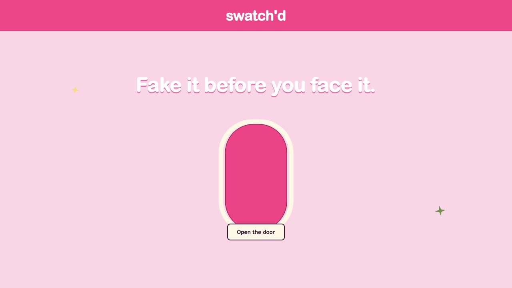

Technique review
Synthesized recurring MUA guidance around posture, gaze, pressure, anchoring, and eye-shape adaptation.
AI + AR makeup coach
Swatch'd helps makeup beginners learn winged eyeliner through a face-aware AR guide and a live coach that responds to each mark as it appears.
My role: product design, research synthesis, interaction design, visual design, computer vision, and frontend engineering.

Overview
01 / Discover
Most beauty content explains what eyeliner should look like. I focused on what a beginner needs while their hand is moving and their eye is partially blocked by a pen.
Synthesized recurring MUA guidance around posture, gaze, pressure, anchoring, and eye-shape adaptation.
Used repeated camera sessions to document false positives, occlusion, state jumps, and overlay legibility.
Treated each mismatch between the eye and the coach as evidence about the interaction model, not only the detector.
Formative evidence
These are observed prototype failures, not findings from a completed external usability study.
No new liner was visible, but noisy pixels advanced several steps.
Detection dropped precisely when the hand approached the eye.
Glow, labels, and dense geometry covered the skin a user needed to see.
The return line needed curve, width, and eye-shape-specific placement.
Synthesis
When confidence drops, hold the current instruction and soften the overlay instead of guessing.
A single frame cannot advance the lesson. The visual condition must remain stable before the state commits.
Useful coaching explains where to rest the hand, how to hold the eye, and how much pressure to use.
How might we
How might we coach a precise physical gesture without asking a noisy vision system to pretend it is certain?
02 / Define
The lesson was broken into observable milestones. Each step has one physical action and one visual condition.
If the detector becomes confused, the coach stays with the current instruction. Resetting is always an explicit user action.
Design principles
Stability is more valuable than apparent responsiveness.
The overlay must preserve the skin and lash line beneath it.
Instructions connect the target shape to a specific hand movement.
Wing lift, width, and return curve respond to facial geometry.
03 / Iterate
Full-face rulers proved tracking was working, but they created visual noise. The final overlay keeps only the active eye contour and wing path.
The return line moved farther from the lower edge and became a smooth curve that meets the lash line without cutting into the eye.
Frame-by-frame lesson selection became a forward-only temporal state machine with confidence holds and minimum dwell time.
04 / Design engineering
05 / Final direction
06 / Validate
Working prototype